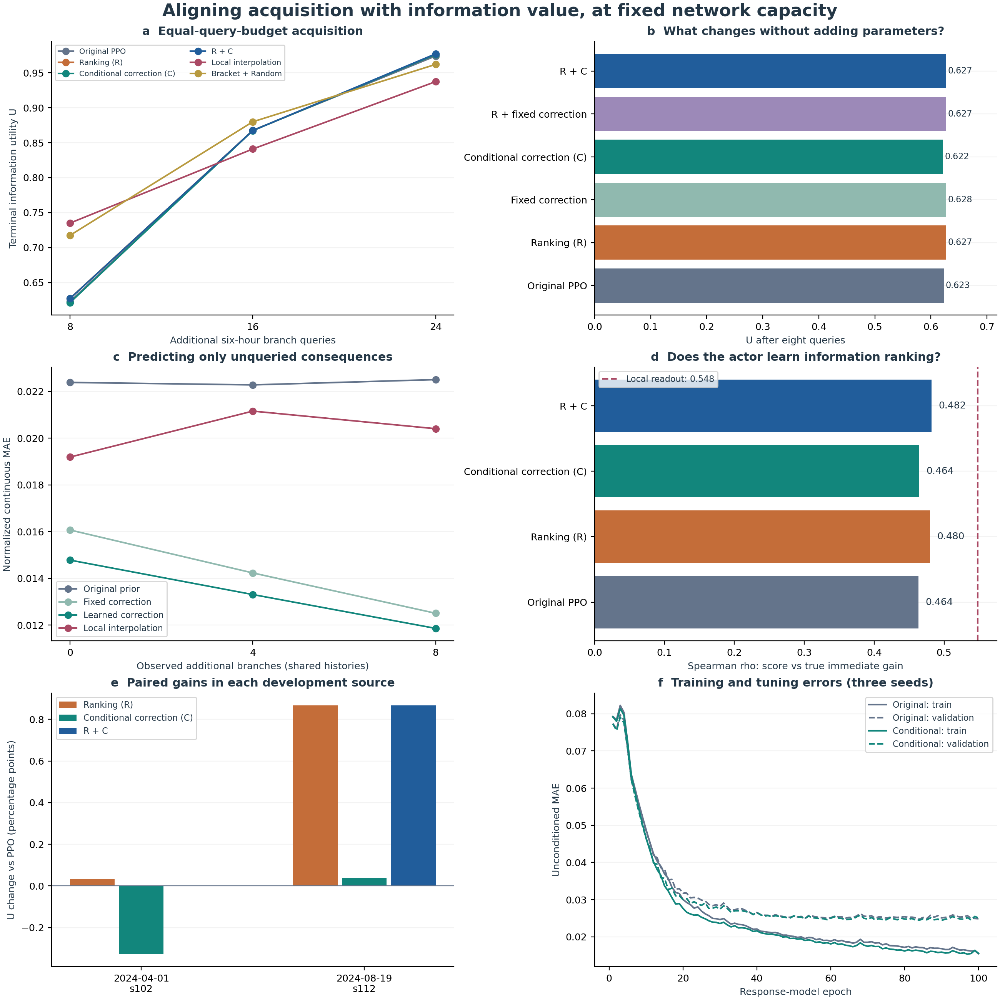

信息价值对齐与观测后修正：结果及归因
本轮保持网络容量、样本、归一化、训练角色和查询预算不变，完成三种子的R（信息价值排序监督）、C（观测条件化后果修正）、R+C及固定修正规则对照。原物理采集继续暂停，没有新增物理仿真，没有训练旧RL、专家或预警器。数据来自76个完整情境、2432条分支；10个source训练、4个source调参，预先留出的2个开发source用于本轮评价，3个cal source另作诊断。
最有价值的发现是：观测后修正确实让后果预测更准，但当前PPO没有有效利用这些更准确的候选后果。 因而本轮支持后果修正机制，尚未得到显著改善的小预算PPO采集器。这一归因来自同容量消融与冻结策略的输入核验，而非根据总体得分猜测。
同预算采集结果
U为原定义的后果画像覆盖与恢复边界双端检出效用。先在同source内平均情境与种子，再对source等权平均。
| 方法 |
8次查询 |
16次查询 |
24次查询 |
| 原PPO |
0.6230 |
0.8677 |
0.9739 |
| R |
0.6275 |
0.8674 |
0.9759 |
| 固定修正＋PPO |
0.6275 |
0.8673 |
0.9738 |
| C |
0.6215 |
0.8673 |
0.9760 |
| R＋固定修正 |
0.6271 |
0.8673 |
0.9755 |
| R+C |
0.6273 |
0.8674 |
0.9769 |
| 局部插值 |
0.7351 |
0.8410 |
0.9372 |
| 括区＋Random |
0.7176 |
0.8799 |
0.9619 |
| Random |
0.4636 |
0.7420 |
0.8794 |
| Sobol |
0.5396 |
0.6683 |
0.9713 |
R+C相对原PPO在预算8/16/24分别为+0.43/−0.03/+0.30个百分点。预算8仍由局部插值领先，预算16括区＋Random领先，预算24已接近完整有限池的效用上限。因此，当前不能把R+C包装成已经明显提升的RL采集算法。
后果修正的作用清楚可见
在所有方法共享的查询历史下，只评价尚未查询的动作，避免把已知答案回填后的零误差当成预测能力。
| 后果预测方式 |
共同初始3条后MAE |
再观测4条后MAE |
再观测8条后MAE |
| 原模型 |
0.02238 |
0.02228 |
0.02250 |
| 原模型＋固定残差修正 |
0.01607 |
0.01423 |
0.01250 |
| 条件化模型，不作观测修正 |
0.02252 |
0.02243 |
0.02260 |
| 条件化模型＋观测修正 |
0.01478 |
0.01330 |
0.01186 |
| 局部插值 |
0.01919 |
0.02116 |
0.02040 |
观测8条额外分支后，C相对原模型降低约47.3%的连续后果MAE；相比同样采用固定残差规则的旧模型，条件化训练又降低约5.2%的误差。主要增益来自利用当前情境已经获得的真实后果修正预测，额外条件化学习提供较小但可辨认的收益。相同方向也出现在没有参与训练与选择的cal source：MAE由0.02619降至0.01397，固定修正为0.01456。
这符合问题本身的结构：新情境可能存在共享的状态偏差，而已经查询的动作提供了本情境下的定量校准依据。用它修正剩余动作，比单纯依赖训练期静态拟合更有效。原模型与条件化模型的静态MAE相近，进一步说明收益并非靠扩容或把静态训练做得更久得到。
后果读出排序与策略排序是两种能力
按预测后果构造的即时边际信息价值，排序rho由原模型的0.0353提高至C的0.3887，固定修正为0.3878；局部插值仍为0.5480。此前0.035附近的数字描述的是后果模型派生评分，不是PPO策略自身logit的排序能力。
策略logit与真实即时信息增益的rho，原PPO为0.4635，R为0.4797，R+C为0.4820。排序监督略微改善了策略排序，但提升幅度小，终局查询收益也相应很有限。它没有把后果读出的大幅改善完整传递到采集选择。
进一步对每个策略检查72个共同历史决策点（2 source×4情境×3种子×3历史长度）。把所有候选的63维预测后果清零，或替换为真实连续后果与真实失败标签，原PPO、R和R+C的首选动作变化均为0/72。所有初态、候选行动、已查询观测和剩余预算保持不变；真值替换只作为敏感性诊断，不作为可运行方法。候选连续后果输入的平均范数仅为动作输入的约4.4%–4.7%，这种尺度差异与低决策敏感性一致，但不能单凭范数就认定唯一原因。
这一结果把瓶颈进一步缩小到“策略如何利用候选后果”。后果预测不只是有误差，当前策略还表现出对这些输入变化不敏感、主要沿既有行动偏好选择的现象。继续增加预测器容量，未必能把预测改进自动转成采集收益。
冻结读出诊断：修正信息具有实际采集价值
不重新训练任何模型，让同目标贪心读出直接使用每次观测后的修正预测，仍按同一查询预算回放。这是看到主消融结果之后追加的机制诊断，没有用它反向选择本轮checkpoint或训练超参数。
| 冻结后果模型的读出 |
8次查询 |
16次查询 |
24次查询 |
| 原静态后果＋贪心 |
0.5839 |
0.7866 |
0.9433 |
| 固定残差修正＋贪心 |
0.6089 |
0.9017 |
0.9821 |
| 条件化修正＋贪心 |
0.5035 |
0.8839 |
0.9850 |
预算16时，固定修正读出相对原静态贪心为+11.51个百分点，也高于原PPO的0.8677和括区＋Random的0.8799。预算24时，条件化修正读出为0.9850，比原静态贪心高4.17个百分点。说明更准确、随观测更新的后果可以产生实际采集价值，但通过当前PPO接口传递时被显著削弱。
小预算仍存在明确差异：条件化修正贪心在预算8的恢复边界双端检出率为0，直到预算16才达到1。较低的平均连续误差不保证在很少查询时首先找到边界两侧，下一版应直接处理稀疏经验下的边界证据与查询互补，而非只优化总体回归误差。
本轮方法、计算与代码核验
后果模型136639参数、策略121794参数；没有新增网络或读出头。新增3次后果模型训练约71秒、15次策略训练约559秒，另有评价与诊断时间。每个种子的五种消融均为960个episode，缓存查询次数分别15344/15584/15360，优化步数676/712/684；与原PPO使用相同的情境与预算抽样。这里的23.14万次是训练中重放缓存答案的总次数，不是新增物理仿真。
149项测试通过。独立审查要求补齐分析代码与评价文件的哈希核验，已在全部训练结束后修复并保留修复前代码/协议；学习代码和checkpoint未变，无需重训。完整Resume新增训练0、仿真0。代码接口尚有一个适用范围：解析教师未专门处理“共同初始分支全部未知”的情况，本轮2432条分支和初始观测均有效，未触发该路径；推广到该类未知初态前应增加对应教师处理。单元测试已改用小型fixture，仅完整冻结数据核验测试保留为显式integration。
预算和创新如何表述
PPO是否训练到位，以及效用到底在衡量什么
原PPO的训练流程确实跑完了：每个种子120批、每批8个episode、每批数据作4轮更新，共960个episode。三个种子的首个已更新检查点、验证最佳值和最后值分别为0.8841→0.8891→0.8841、0.8767→0.8872→0.8839、0.8767→0.8865→0.8864；验证最佳出现在40/20/60批。首个检查点已经经过更新，不能当作随机初始化基线。从这些曲线和后果输入敏感性来看，不能把“流程完成”当作“充分学会任务”。继续训练的验证收益较弱，新增R在后期还出现回落。当前checkpoint只按16次预算验证选优，8/24次虽参与训练，并没有独立作为选择指标，这也是后续需要处理的任务匹配问题。
设D为已查询集合，D0为共同初始集合，P为固定的非初始有效候选池。每个动作的后果画像包含12个未来资源区间宽度变化、3个恢复缺口、3个是否可恢复的标签，以及4个资源区间随时间转折的标记。覆盖改善定义为：
C(D) = 1 − [所有P中动作到D中最近后果画像的平均距离] / [所有P中动作到D0中最近后果画像的平均距离]。
它问的是“查到的动作，是否已代表了池中其他动作的后果”，并不直接问“预测误差降低了多少”。边界检出定义为：
B(D) = 已经查到两侧的恢复边界对数 / 全候选池的真实恢复边界对数。
边界对是在同一动作族的相邻强度之间，未来三个时点的可恢复标签至少有一处不同的动作对。必须两端都查到才计入。如果情境存在这样的边界，U(D)=0.5 C(D)+0.5 B(D)；没有边界时，U(D)=C(D)。每次奖励为U(D加入新动作后)−U(D)，所以奖励之和等于终局效用相对初始值的改善。
例如查到的画像已让平均距离下降70%，且4条真实边界中有2条查全两侧，则C=0.7、B=0.5、U=0.6。训练和评价用封存完整池计算这些真值；策略的输入仍只含已查询的答案及预测，不能看到未查真值。
还有一个值得重视的尺度诊断：在76情境内计算所有候选对的平均平方画像距离，区间宽度、恢复缺口、可恢复位、转折位所占比例约为1.54%、0.05%、26.50%、71.92%。这不是每次奖励的贡献比例，却显示当前几何距离更容易被二元恢复/转折形态支配。因而连续后果MAE下降47%不会自动带来相同幅度的U提升。当前U是“画像与边界覆盖”的代理指标，没有直接奖励预警器误差下降，也不是信息熵、风险概率或完整复合召回。
预算8意味着：对同一初始情境，所有方法先得到完全相同的3条初始分支，再各查询8个不同候选动作，每个查询返回该动作的六小时MPC接续后果和三个未来测量点。它不是某方法查8次、另一方法查1次，也不是在一条物理轨迹里连续执行8次控制；分支都从共同初态出发，区别在于按已查经验决定接下来查哪个候选。
排序学习和根据上下文更新预测都有既有研究基础。Learning Loss for Active Learning（CVPR 2019）用学习的损失排序指导查询，Deep Adaptive Design（ICML 2021）学习依赖先前观测的实验设计策略，Attentive Neural Processes（ICLR 2019）学习依赖观测上下文的预测。本文值得继续发展的具体贡献，是把持续MPC调度下未来可用资源、调度收缩与恢复边界作为采集对象，再使真实干预经验能修正对其他方案的后果判断。当前证据支持“观测驱动的后果修正”，尚不支持“排序监督已显著提升序贯规划”的主张。
下一步应优先打通后果评分与查询决策的接口：保留经验证有用的观测修正，让即时信息增益直接参与选择，再让原容量策略学习额外的多步互补价值；在稀疏查询时单独检查边界双端证据。此项是基于本轮诊断提出的后续方向，本轮没有新增这一步训练，也没有恢复采集。
执行命令
已完成的运行保留在 artifacts/sequence_alignment/align_reuse_s42_v1。核验或恢复同一运行：
Set-Location -LiteralPath 'D:\博士资料包\科研\科研\AAAI_RL\tarp_37_information_acquisition'
powershell -ExecutionPolicy Bypass -File .\scripts\run_alignment_v5.ps1 `
-RunId align_reuse_s42_v1 -Mode reuse -Device cuda -Resume
使用新RunId重新做同数据三种子消融（不调用仿真，不恢复原采集）：
powershell -ExecutionPolicy Bypass -File .\scripts\run_alignment_v5.ps1 `
-RunId align_reuse_s42_v2 -Mode reuse -Device cuda
完整封存和角色核查由脚本自动执行。冻结读出诊断的命令为：
$env:PYTHONPATH = Join-Path (Get-Location) 'src'
& '..\tarp_x_expert_evaluation\.venv\Scripts\python.exe' -B `
.\scripts\probe_alignment_readout.py `
--root .\artifacts\sequence_alignment\align_reuse_s42_v1
信息价值排序与观测后修正：固定容量消融
所有方法使用同一数据银行、同一源划分与同一查询预算。原采集保持暂停，旧RL和预警器未训练。

同预算信息采集
U为后果覆盖与恢复边界检出的效用，按source宏平均。
| 方法 | 8次查询 | 16次查询 | 24次查询 |
|---|
| Original PPO | 0.6230 | 0.8677 | 0.9739 |
| Ranking (R) | 0.6275 | 0.8674 | 0.9759 |
| Fixed correction | 0.6275 | 0.8673 | 0.9738 |
| Conditional correction (C) | 0.6215 | 0.8673 | 0.9760 |
| R + fixed correction | 0.6271 | 0.8673 | 0.9755 |
| R + C | 0.6273 | 0.8674 | 0.9769 |
| Local interpolation | 0.7351 | 0.8410 | 0.9372 |
| Bracket + Random | 0.7176 | 0.8799 | 0.9619 |
| Random | 0.4636 | 0.7420 | 0.8794 |
| Sobol | 0.5396 | 0.6683 | 0.9713 |
收益来自哪里
表内为U变化的百分点；固定规则对照将非参数修正和条件化学习拆开。
| 配对比较 | 8次 | 16次 | 24次 |
|---|
| R_minus_PPO | +0.45 | -0.03 | +0.21 |
| C_minus_PPO | -0.14 | -0.04 | +0.21 |
| RC_minus_PPO | +0.43 | -0.03 | +0.30 |
| RC_minus_R | -0.02 | +0.00 | +0.10 |
| RC_minus_C | +0.58 | +0.01 | +0.10 |
| C_learning_minus_fixed | -0.60 | +0.00 | +0.21 |
| RC_learning_minus_fixed | +0.02 | +0.01 | +0.15 |
追加机制诊断：后果信息能否被利用
以下为冻结模型的事后读出检查，所有可运行方法依然只看已查询答案，无新增训练或仿真。它不用于选择本轮训练配方。
| 读出方式 | 8次 | 16次 | 24次 |
|---|
| 原后果模型＋同目标贪心 | 0.5839 | 0.7866 | 0.9433 |
| 固定残差修正＋同目标贪心 | 0.6089 | 0.9017 | 0.9821 |
| 条件化修正＋同目标贪心 | 0.5035 | 0.8839 | 0.9850 |
另外，在每个策略的72个共同历史决策点，将候选后果全部清零或替换为完整真值，原PPO、R与R+C的首选动作均未改变。这里真值输入仅用于诊断，不是可部署对照。这表明当前策略对候选后果缺乏有效利用，预测变准尚未充分转化成查询选择。
完整方法与数据口径
# 固定容量信息对齐复用验证
本轮以相同的完整情境、归一化、角色和种子，区分信息价值排序监督R、观测条件化后果学习C，以及无新增训练目标的固定残差修正。
原后果模型136639参数，原采集策略121794参数，均未扩容。训练10个source、调参4个source，开发留出2个source；原正式confirm未使用。
一次预算查询是同一初始情境下一个新候选动作的完整六小时MPC接续，返回三个后续时点的资源/恢复测量。每方法预算8意味着在共同3条初始分支以外再查8条，绝不是八次与一次相比。银行完整池有32条动作，本轮回放已封存答案，没有新物理仿真。
## 同预算结果
|方法|8次|16次|24次|
|---|---:|---:|---:|
|Bracket + Random|0.7176|0.8799|0.9619|
|Conditional correction (C)|0.6215|0.8673|0.9760|
|Fixed correction|0.6275|0.8673|0.9738|
|Local interpolation|0.7351|0.8410|0.9372|
|Original PPO|0.6230|0.8677|0.9739|
|Random|0.4636|0.7420|0.8794|
|Ranking (R)|0.6275|0.8674|0.9759|
|R + C|0.6273|0.8674|0.9769|
|R + fixed correction|0.6271|0.8673|0.9755|
|Sobol|0.5396|0.6683|0.9713|
## 机制和监督
R直接监督策略对边际信息价值的排序，标签仅由训练银行产生；C用已经观测的真实后果残差修正未查询候选，并在训练阶段模拟这种条件化任务。C-fixed只应用同一规则，帮助识别条件化学习的额外作用。排序rho、后果MAE和最终U分开报告；MAE只统计未查询动作，避免已知值回填造成虚假收益。
## 计算口径
{'response_fits': 3, 'policy_fits': 15, 'response_seconds': 71.40675919991918, 'policy_seconds': 558.7947649000562, 'response_optimizer_steps': 2860, 'policy_optimizer_steps': 10360, 'cache_query_replays': 231440, 'response_parameter_counts': [136639], 'policy_parameter_counts': [121794], 'matched_episode_query_step_counts': {'42': [960, 15344, 676], '43': [960, 15584, 712], '44': [960, 15360, 684]}, 'new_simulations': 0, 'old_rl_training': 0, 'warning_training': 0}
U沿用后果画像覆盖与恢复边界双端检出的效用，它不是复合风险召回率，也不是连续动作空间全覆盖证明。source统计先在同source情境与训练种子内平均，再对source等权；这轮两条开发留出source用于寻找机制，未改训练配方。
## 相关研究与本文定位
[Deep Adaptive Design (ICML 2021)](https://proceedings.mlr.press/v139/foster21a.html)学习基于历史实验结果的自适应设计策略；[Attentive Neural Processes (ICLR 2019)](https://arxiv.org/abs/1901.05761)学习基于观测上下文的条件预测。我们的方向是将持续MPC调度中后续资源范围、转折和恢复边界直接定义为采集目标，在固定容量下检验任务对齐与观测修正的作用。一般的排序学习与观测条件化不作首次提出的主张。